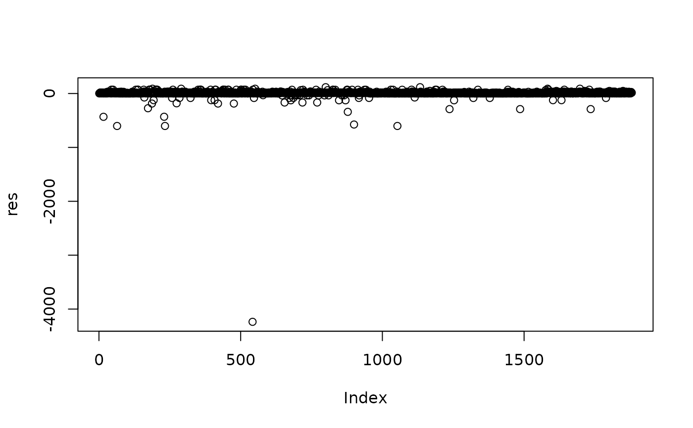

Regression diagnostics in singleRcapture
Source: R/Methods.R, R/documentationFiles.R
regDiagSingleR.RdList of some regression diagnostics implemented for
singleR class. Functions that either require no changes from
glm class or are not relevant to context of singleRcapture
are omitted.
Usage
dfpopsize(model, ...)
# S3 method for singleR
hatvalues(model, ...)
# S3 method for singleR
dfbeta(model, maxitNew = 1, ...)
# S3 method for singleR
residuals(
object,
type = c("pearson", "pearsonSTD", "response", "working", "deviance", "all"),
...
)
# S3 method for singleR
cooks.distance(model, ...)
# S3 method for singleR
dfpopsize(model, dfbeta = NULL, observedPop = FALSE, ...)Arguments
- model, object
object of
singleRclass.- ...
arguments passed to other methods. Notably
dfpopsize.singleRcallsdfbeta.singleRif nodfbetaargument was provided andcontrolMethodis called indfbetamethod.- maxitNew
maximal number of iterations for regressions with starting points \(\hat{\boldsymbol{\beta}}\) on data specified at call for
modelafter the removal of k'th row. By default 1.- type
a type of
- dfbeta
if
dfbetawas already obtained it is possible to pass them into function so that they need not be computed for the second time.- observedPop
logical. For
singleRclass object if set toTRUEindicates that 1 will be returned for units which do not take part in population size estimation (e.g. 1's in zero one truncated models or units with count => 3 forzeltermanof basicchaomodel) if set toFALSE(default) these units will not be included in results.
Value
For
hatvalues-- A matrix with n rows and p columns where n is a number of observations in the data and p is number of regression parameters.For
dfpopsize-- A vector for which k'th element corresponds to the difference between point estimate of population size estimation on full data set and point estimate of population size estimation after the removal of k'th unit from the data set.For
dfbeta-- A matrix with n rows and p observations where p is a number of units in data and p is the number of regression parameters. K'th row of this matrix corresponds to \(\hat{\boldsymbol{\beta}}-\hat{\boldsymbol{\beta}}_{-k}\) where \(\hat{\boldsymbol{\beta}}_{-k}\) is a vector of estimates for regression parameters after the removal of k'th row from the data.cooks.distance-- A matrix with a single columns with values of cooks distance for every unit inmodel.matrixresiduals.singleR-- Adata.framewith chosen residuals.
Details
dfpopsize and dfbeta are closely related. dfbeta
fits a regression after removing a specific row from the data and returns the
difference between regression coefficients estimated on full data set and
data set obtained after deletion of that row, and repeats procedure once
for every unit present in the data.dfpopsize does the same for
population size estimation utilising coefficients computed by dfbeta.
cooks.distance is implemented (for now) only for models with a single
linear predictor and works exactly like the method for glm class.
residuals.singleR (can be abbreviated to resid) works like
residuals.glm with the exception that:
"pearson"-- returns non standardised residuals."pearsonSTD"-- is currently defined only for single predictors models but will be extended to all models in a near future, but for families with more than one distribution parameter it will be a multivariate residual."response"-- returns both residuals computed with truncated and non truncated fitted value."working"-- is possibly multivariate if more than one linear predictor is present."deviance"-- is not yet defined for all families insingleRmodels()e.g. negative binomial based methods."all"-- returns all available residual types.
hatvalues.singleR is method for singleR class for extracting
diagonal elements of projection matrix.
Since singleRcapture supports
not only regular glm's but also vglm's the hatvalues returns a matrix
with number of columns corresponding to number of linear predictors in a model,
where kth column corresponds to elements of the diagonal of projection
matrix associated with kth linear predictor. For glm's
\[\boldsymbol{W}^{\frac{1}{2}}\boldsymbol{X}
\left(\boldsymbol{X}^{T}\boldsymbol{W}\boldsymbol{X}\right)^{-1}
\boldsymbol{X}^{T}\boldsymbol{W}^{\frac{1}{2}}\]
where: \(\boldsymbol{W}=\mathbb{E}\left(\text{Diag}
\left(\frac{\partial^{2}\ell}{\partial\boldsymbol{\eta}^{T}
\partial\boldsymbol{\eta}}\right)\right)\)
and \(\boldsymbol{X}\) is a model (lm) matrix.
For vglm's present in the package it is instead :
\[\boldsymbol{X}_{vlm}
\left(\boldsymbol{X}_{vlm}^{T}\boldsymbol{W}\boldsymbol{X}_{vlm}\right)^{-1}
\boldsymbol{X}_{vlm}^{T}\boldsymbol{W}\]
where:
\[
\boldsymbol{W} = \mathbb{E}\left(\begin{bmatrix}
\text{Diag}\left(\frac{\partial^{2}\ell}{\partial\eta_{1}^{T}\partial\eta_{1}}\right) &
\text{Diag}\left(\frac{\partial^{2}\ell}{\partial\eta_{1}^{T}\partial\eta_{2}}\right) &
\dotso & \text{Diag}\left(\frac{\partial^{2}\ell}{\partial\eta_{1}^{T}\partial\eta_{p}}\right)\cr
\text{Diag}\left(\frac{\partial^{2}\ell}{\partial\eta_{2}^{T}\partial\eta_{1}}\right) &
\text{Diag}\left(\frac{\partial^{2}\ell}{\partial\eta_{2}^{T}\partial\eta_{2}}\right) &
\dotso & \text{Diag}\left(\frac{\partial^{2}\ell}{\partial\eta_{2}^{T}\partial\eta_{p}}\right)\cr
\vdots & \vdots & \ddots & \vdots\cr
\text{Diag}\left(\frac{\partial^{2}\ell}{\partial\eta_{p}^{T}\partial\eta_{1}}\right) &
\text{Diag}\left(\frac{\partial^{2}\ell}{\partial\eta_{p}^{T}\partial\eta_{2}}\right) &
\dotso & \text{Diag}\left(\frac{\partial^{2}\ell}{\partial\eta_{p}^{T}\partial\eta_{p}}\right)
\end{bmatrix}\right)\]
is a block matrix constructed by taking the expected value from diagonal
matrixes corresponding to second derivatives with respect to each linear
predictor (and mixed derivatives) and
\(\boldsymbol{X}_{vlm}\) is a model (vlm) matrix constructed using
specifications in controlModel and call to estimatePopsize.
Examples
# For singleR class
# Get simple model
Model <- estimatePopsize(
formula = capture ~ nation + age + gender,
data = netherlandsimmigrant,
model = ztpoisson,
method = "IRLS"
)
# Get df beta
dfb <- dfbeta(Model)
# The results
res <- dfpopsize(Model, dfbeta = dfb)
summary(res)
#> Min. 1st Qu. Median Mean 3rd Qu. Max.
#> -4236.412 2.664 2.664 5.448 17.284 117.448
plot(res)

# It is also possible to not provide dfbeta then they will be
# computed manually
summary(dfpopsize(Model))
#> Min. 1st Qu. Median Mean 3rd Qu. Max.
#> -4236.412 2.664 2.664 5.448 17.284 117.448